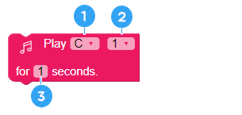

Let’s make a cooking timer robot
• Understand the principle of a timer
• Execute a specific motion at fixed time.
• Create and explain a cooking timer program
A. Cooking timer
When we cooking food, we use a device called a “cooking timer’ to measure the cooking time precisely.
① You can also use a timer not only for cooking but also when studying.
② A timer can also be used to prevent incidents.
③ A timer is very convenient as you can control the time precisely.
B. AsomeBot has a watch inside.
Inside the AsomeBot is a very sophisticated clock that measures time in milliseconds. Therefore, you can make a cooking timer using the watch function of AsomeBot.


AsomeBot has no number display or watch to show. How can AsomeBot express the measured time?

AsomeBot can make sound and also move. Therefore, it can express the time in the following way:
Let's find out more if there are other ways of expression.
A. Delay ([ADVANCE] Group)
Wait without moving for the specified seconds. Using this block, the robot can move as you want in the interval of 10 sec., 30 sec., and 60 sec.
① Input the number of seconds to wait after a click.
B. Repeat ([ADVANCE] Group)
Repeat the commands in the block as many times as you want.

① Specify the number of times to repeat.
② Add blocks to repeat.
Using the repeat block and [Delay] block, create a program that lets the robot to Flap every 30 sec.
C. Dance Moves without Option ([DANCE] Group)

Perform ballet moves by standing the toes of AsomeBot.

AsomeBot wiggles in place.

AsomeBot flaps its feet.

AsomeBot performs Warigari with its feet.

AsomeBot lifts up the tiptoe of the feet. The opposite of ballet motion.

AsomeBot performs moonwalk dance.
D. Optional dance moves ([DANCE] group)
Select the which side foot of the AsomeBot to move in options.

[Mouse] is to lift and move AsomeBot’s one foot.

Lift one foot of the AsomeBot and turn it back.

turn back the foot of the Asomebot and bob up and down once.
* Using the Mouse, Swing, and TickTock motions, create a program that moves both feet at a time.
E. Buzzer on ([SOUND] Dance)
Make the buzzer unable to use. To make sound with the buzzer, you must use this block. Note that if the block is not used first, you cannot use the block.

F. Buzzer off ([SOUND] Group)
This allows you to use other parts again after using the buzzer. You cannot use other parts while using the buzzer. After playing the music, the block must be used to run other components.

G. Play for ([SOUND] Group)
Using this block, you can make the sound you want using the frequency.
① Select the scale from the list that you want to play.
② Select the octave of scale from the list to play.
③ Specify the time to make the sound.
Make a note for 3-octave Fa for 0.5 sec.
H. Beat and time
The play time for each beat of the music score we use are as below: When playing music, create a program that reflects the playing time for each beat.
① Make a sound at 3-octave G in an 8 note beat.
② Wait for 1 minute, and create a program to play music with a buzzer.

A. Algorithm
You can make a cooking timer with the following method: Let’s find out together if there are other ways to make it.
B. Making a cooking timer of your choice